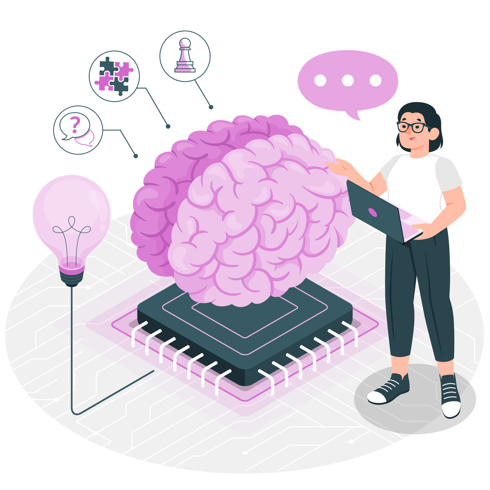

Machine Learning Basics
Posted on November 30, 2024 by Balavanth
Introduction to Machine Learning: What Is and Its Applications
Machine learning (ML) is a type of artificial intelligence (AI) that allows computers to learn without being explicitly programmed. This article explores the concept of machine learning, providing various definitions and discussing its applications. The article also dives into different classifications of machine learning tasks, giving you a comprehensive understanding of this powerful technology.
Machine learning (ML) is a type of Artificial Intelligence (AI) that allows computers to learn without being explicitly programmed. It involves feeding data into algorithms that can then identify patterns and make predictions on new data. Machine learning is used in a wide variety of applications, including image and speech recognition, natural language processing, and recommender systems.
Classification of Machine Learning
Machine learning implementations are classified into four major categories, depending on the nature of the learning “signal” or “response” available to a learning system which are as follows:
1. Supervised learning:
Supervised learning is the machine learning task of learning a function that maps an input to an output based on example input-output pairs. The given data is labeled. Both classification and regression problems are supervised learning problems.
2. Unsupervised learning: Unsupervised learning is a type of machine learning algorithm used to draw inferences from datasets consisting of input data without labeled responses. In unsupervised learning algorithms, classification or categorization is not included in the observations. Example: Consider the following data regarding patients entering a clinic. The data consists of the gender and age of the patients.
Reinforcement learning is the problem of getting an agent to act in the world so as to maximize its rewards. A learner is not told what actions to take as in most forms of machine learning but instead must discover which actions yield the most reward by trying them. For example — Consider teaching a dog a new trick: we cannot tell him what to do, what not to do, but we can reward/punish it if it does the right/wrong thing. When watching the video, notice how the program is initially clumsy and unskilled but steadily improves with training until it becomes a champion.
4. Semi-supervised learning: Where an incomplete training signal is given: a training set with some (often many) of the target outputs missing. There is a special case of this principle known as Transduction where the entire set of problem instances is known at learning time, except that part of the targets are missing. Semi-supervised learning is an approach to machine learning that combines small labeled data with a large amount of unlabeled data during training. Semi-supervised learning falls between unsupervised learning and supervised learning.
In conclusion, machine learning is a powerful technology that allows computers to learn without explicit programming. By exploring different learning tasks and their applications, we gain a deeper understanding of how machine learning is shaping our world. From filtering your inbox to diagnosing diseases, machine learning is making a significant impact on various aspects of our lives.